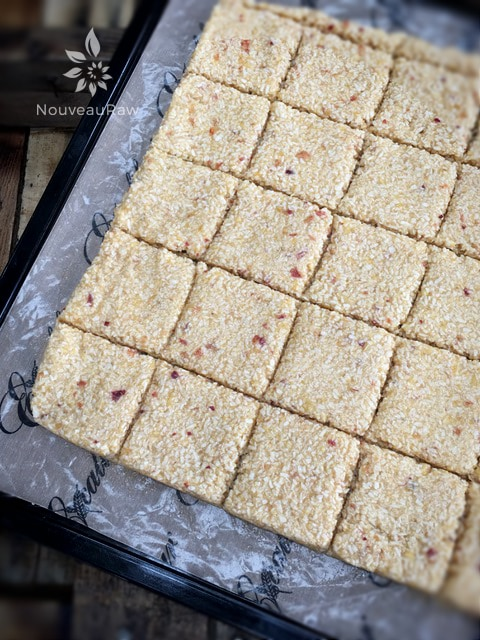

Nectarine Orange Coconut Crackers
~ raw, vegan, gluten-free, nut-free ~
When creating new recipes, I really do try to limit the number of different flavors that I am combining. When you add too many together, it can result in a dulling of the taste of the overall recipe, and then nothing will stand out. That equates to… boring! (yawns) My recipes may have more or may have fewer ingredients, but it is all about the texture and flavor that I am after, and of course the nutrient content. I try my best to make every bite count.
By keeping the ingredients simple, you can hone in on all the wonderful flavors that you are putting together. For me, I like to have only one or two predominant flavors, especially in sweet foods. But, I often add small amounts of additional flavor elements to help support the main combination. If you want to play around with adding different spices or properties to your version, try; cardamom, ginger, or vanilla. These all compliment the flavor of apricots. Creativity and imagination are part of the fun of creating foods from scratch. So enjoy yourself!
I have to giggle when thinking about how these crackers materialized. All week long, as I opened and closed and the fridge door, I kept seeing this bin filled with apples. Silently, I made a mental note after mental note that I needed to create a recipe with them. Finally, the weekend rolled around, and I was bound and determined to come up with an apple masterpiece. I reached into the fridge, removed the bin, and placed it on my workstation. I grabbed a piece of paper to jot some ideas down. My hope was that I would gaze upon those apples in front of me and inspiration would attack me with a vengeance.
I closed my eyes, inhaled deeply, opened my eyes, and pulled the apples towards me. I gazed down, and it took a few seconds to realize that these “apples” were not apples… they were nectarines! Well shoot fire and save matches. It wasn’t a total game changer because after all fruit is fruit, and inspiration is inspiration… but I knew instantly that I could create yet another wonderful flavor combination for my nut-free cracker line.
These crackers are light, airy, super crunchy and crispy, have a wonderful aroma, and a beautiful pale “orangesicle” color. I find that these fruit sweetened, coconut based, nut-free crackers taste the best all on their own. Their simple flavor inspires great appreciation. Well, I need to get back in the kitchen… I did, however, purchase some apples (!), and I can’t wait to create something with them too. hehe With love and blessings, amie sue
Ingredients:
Yields 1 (12×12) dehydrator tray
- 3 cups (236 g) shredded dried, coconut
- 1 Tbsp ground Ceylon cinnamon
- 1/4 tsp Himalayan pink salt
- 2 cups (317 g) fresh, diced nectarine
- 1 Tbsp orange zest
- 1 cup (185 g) fresh orange segments
- 1 Tbsp maple syrup (optional)
- water if needed
Preparation:
- In a food processor, fitted with the “S” blade, combine the shredded coconut, cinnamon, and salt. Make sure they get well mixed.
- If you don’t have shredded coconut but instead have large pieces of dried coconut… that’s ok too. Just make sure to process it until it reaches a small crumble size, for this is the “flour” for the cracker base.
- Add the nectarines, orange zest, and orange segments, processing until it becomes a spreadable batter.
- Some nectarines are juicer than others based on how ripe they are. If yours are on the dry side, you might need to add some water to the batter, so it creates a paste-like texture. Do this 1 Tbsp at a time, so it doesn’t get too wet. I had to add 2 Tbsp to my batch this time.
- The sweetener is only needed if your nectarines are not very sweet or if you have a sweet tooth.
- If you are trying to reduce your added sugars, try a squirt of liquid NuNaturals stevia.
- Be sure to zest the orange before peeling it.
- Line the dehydrator tray with a non-stick teflex sheet.
- Spread the batter from edge to edge or until it reaches at least 1/4″ thick. I wouldn’t go any thinner, so you have a nice sturdy cracker.
- Make sure that you spread it evenly, so it dries evenly.
- Score the crackers into desired shapes and sizes. You can use a pizza cutter or a long metal ruler to create the score marks. I used my 6-wheel pastry cutter.
- Sprinkle coarse sea salt on top; this will add a layer of flavor as well as amp up the sweetness.
- Dehydrate at 145 degrees (F) for 1 hour, then reduce to 115 degrees (F) and continue drying for 10+ hours… until dry and crispy.
- Snap apart and let cool before storing, store in an airtight bag/container.
- They should last several weeks in the pantry and can be frozen for 1-2 months. If they start to soften due to humidity, throw them back in the dehydrator to crisp up.
Culinary Explanations:
- Why do I start the dehydrator at 145 degrees (F)? Click (here) to learn the reason behind this.
- When working with fresh ingredients, it is important to taste test as you build a recipe. Learn why (here).
- Don’t own a dehydrator? Learn how to use your oven (here). I do however truly believe that it is a worthwhile investment. Click (here) to learn what I use.

The photo above is of the crackers heading into the dehydrator.
© AmieSue.com